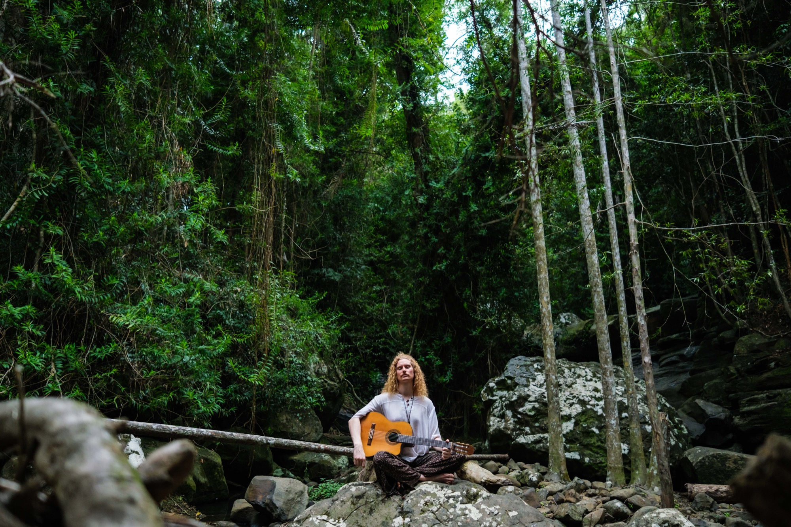
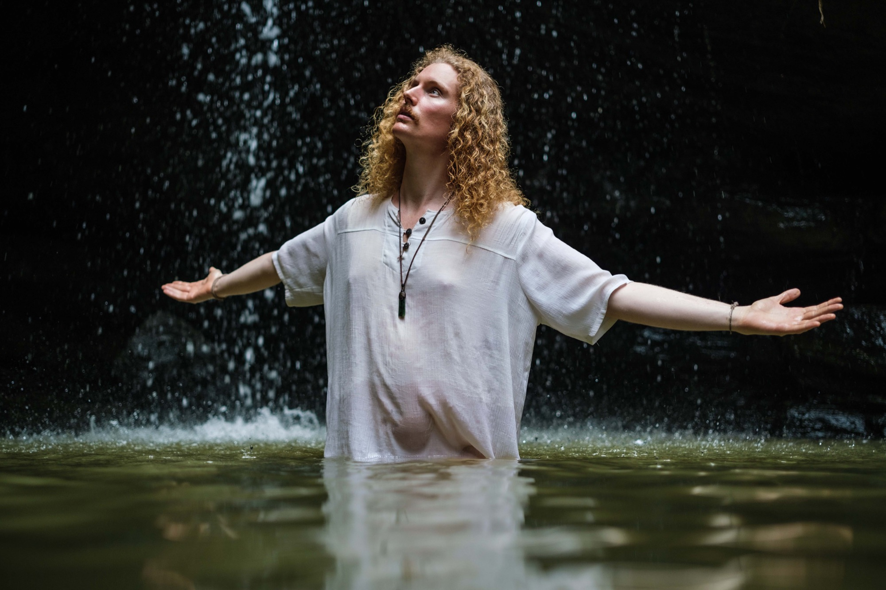
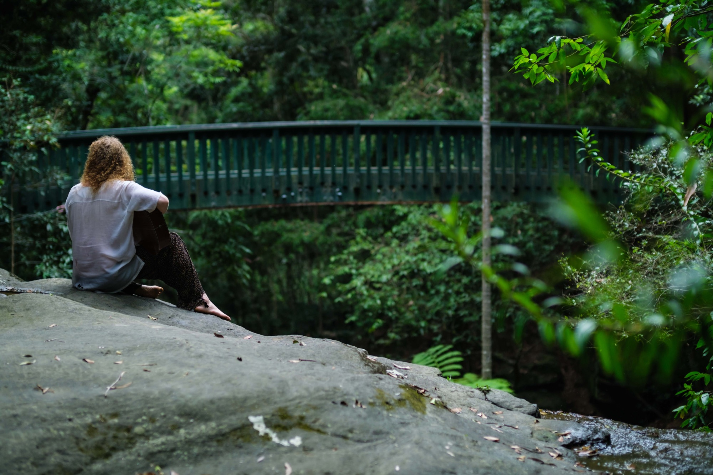

Songs, sound and shared presence.

Influenced by sounds of the world that recall our ancestors, Alexander Alma’s music brings out the beauty of real acoustic instruments layered through his looper. Drawing on sounds from India, Africa, the Middle East and Australia, the music invites you into a place of presence, resonance and remembering.
Music for deep embodiment and receptive spaces.
For spaces where people are receptive and seeking deep embodiment:
- Sound healing
- Yoga
- Conscious dance
- Bodywork
- One-to-one and one-to-two sound-healing sessions

Vibrational Empathy Sound Healing
A sensory experience that will take you deep within, to vibrate away outdated programs and to make room for your spirit to fully occupy your being with clarity and discernment. Be held by ancestral sound that reminds you of your original purity as a soul. Live-looped into immersive soundscapes using a range of acoustic instruments, such as: Guitar, voice, kalimba, flute, didgeridoo, djembe, drones, rattles and more.
Book a 90-minute sessionAlways open to a conversation

Always open to a conversation.
Artistic collaborations and production work can bring Alexander into other artists’ music. Where a project calls for it, his name can appear in the track credits.
Session playing
Nylon-string and acoustic guitar for other artists’ records and live shows.
Scoring
Music for film, from short documentary to longer work.
Sound design
Gong, bowl and guitar textures for movement, dance and theatre.
Releases and recordings will be listed here as they come out.